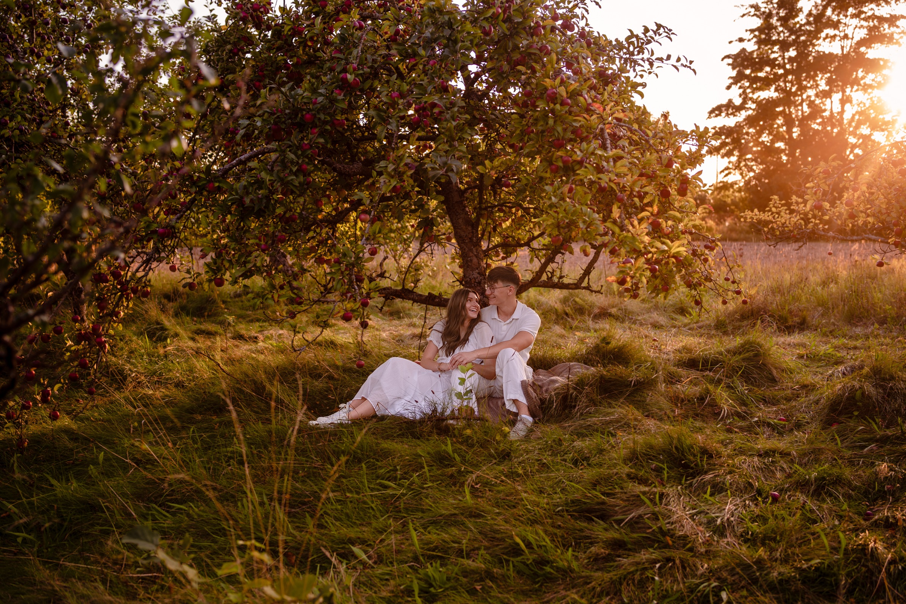

biorą ślub
Cieszymy się, że tu jesteście. Na tej stronie znajdziecie wszystko, co trzeba wiedzieć o naszym ślubie: gdzie, o której, jak dojechać i o co Was prosimy.
20 marca
Prosimy o potwierdzenie obecności do 20 marca 2027: telefonicznie, SMS-em lub na WhatsAppie.
Zuzanna +48 669 002 760
Kacper +48 533 073 336
Kościół i sala leżą blisko Koszalina. Kliknij mapę, żeby otworzyć nawigację.
Prosimy, nie róbcie zdjęć i nie nagrywajcie podczas ceremonii. Zajmą się tym fotograf i kamerzysta, a Wy bądźcie z nami w pełni. Wszystkie zdjęcia opublikujemy tutaj kilka tygodni po ślubie.
Przywieźcie ze sobą radość, nadzieję i dobrą energię. Będziemy się weselić i chcemy, żebyście weselili się razem z nami.
Jest możliwość wykupienia noclegu na miejscu, w Domu Weselnym. Jeśli chcecie zostać na noc, dajcie nam znać przy potwierdzeniu obecności.
W razie pytań dzwońcie: Zuzanna +48 669 002 760, Kacper +48 533 073 336.
Galeria ma trzy części: zdjęcia od Was, zdjęcia od fotografa i film. Swoje zdjęcia z wesela możecie dodać od razu z telefonu, bez logowania. Zdjęcia od fotografa i film pojawią się kilka tygodni po ślubie.
Wszystkie zdjęcia są też w folderze na Google Drive.
Mamy nadzieję, że będziemy się świetnie bawić i wszyscy wyjedziemy napełnieni nadzieją i miłością.
Widzimy się 15 maja 2027.
Tak więc trwają wiara, nadzieja, miłość – te trzy: z nich zaś największa jest miłość